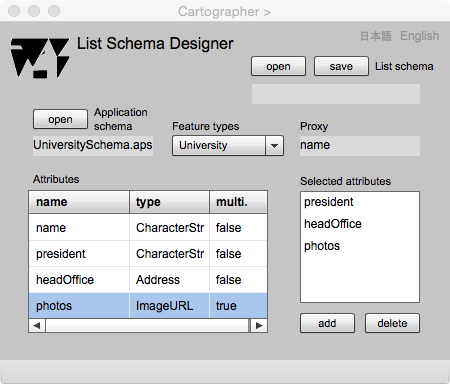

List Schema Designer
Conventional maps are diagrams of symbols distributed on the sheet. One of the purpose of GISs is to represent valuable maps. In gittok, two dimensional maps can be represented if proxies of features are geometric attributes. However, as long as feature is an abstruction of real world phenomena, a feature does not always have geometry as its attribute.
Imagine you are working at the global company. If someone ask where your companyis. May be you will answer "The head office is located in Tokyo, Japan. However there are many branches in all over the world. I am working at the office in New York." How about the shape of this company? But the company is a sharing concept or aggreeement among the related people. Asking the shape of the company could be non-sense. A geographic feature without geometric attributeIt is sometimes natural. If a proxy attribite is a character string such as a name of a company, a list of company names can be seen as an one dimensional mapinstead of a two dimensinal geometric map. In gittok, one dimensional nominal map is called a list.
List Schema Designer

Figure 1. Page of List schema designer.
Fields
Application schema
An application schema name for the list schema is displayed in this field.
List schema
List schema name that is opened or saved is displayed in this field.
Feature types with which proxies are non-geometry (selectable)
Selected feature type name for the list schema s displayed in the field.
Selected feature types (selectable)
The list of selected feature types which are used for the representation is displayed.
Attribute types without proxy (selectable)
attribute list is displayed in the list by the selection of the feature on "Selected feature types" list.
Selected attributes (editable)
Attribute list for info. page representation is displayed in this list by the selection of attribute type displayed on "Attribute types without proxy" list.
Buttons
open (Application schema)
An application schema can be opened by clicking this button.
open (List schema)
The list schema can be opened by clicking this button.
save (List schema)
The list schema can be saved by clicking this button.
add (Selected feature types)
The name of selected feature type is displayed in this list after the selection of the featire type listed in "Feature types with which proxies" and this button is pushed.
delete (Selected feature types)
The featue type is deleted by the push of this button after the selection od the feature type in the list.
add (Selected attributes)
Representable attribute is added by clicking this button after the selection of attribute type listed in Attributes list.
delete (Selected attributes)
Representable attribute is deleted by clicking this button after the selection of attribute type listed in Selected attributes list.
日本語
今あなたが読んでいるドキュメントが表示されます．
English
You can read the tutorial written in English.